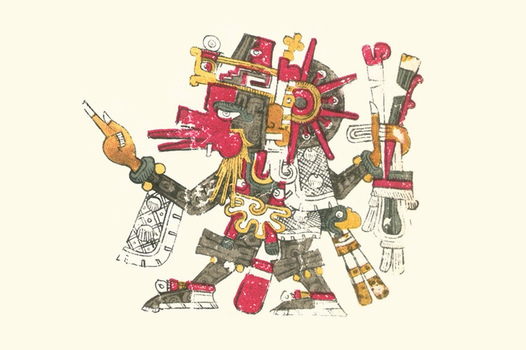
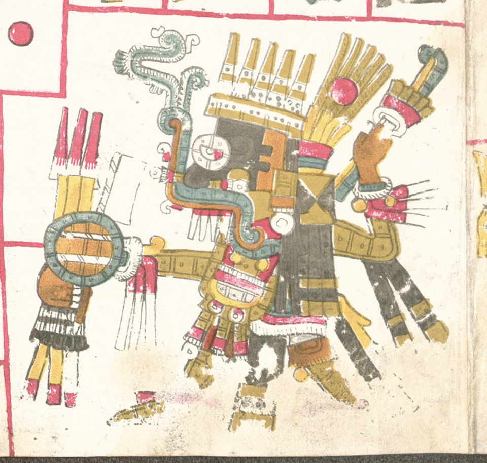
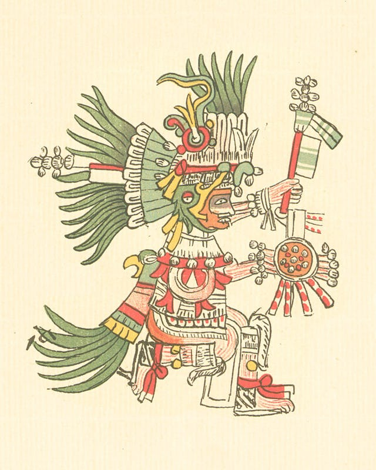

Huitzilopochti:
Aztec sun and war god, one of the two principal deities of Aztec religion, often represented in art as either a hummingbird or an eagle.

Coatlicue
Serpent Skirt' was a major deity in the Aztec pantheon and regarded as the earth-mother goddess.

Tezcatlipoca
whose name means “Smoking Mirror”, was the Aztec god of night and sorcery, as well as the patron deity of Aztec kings and young warriors